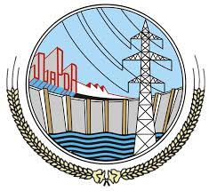

More About Me
My name is Talha Zain, and I have a diverse educational background
that has shaped my passion and expertise in the field of computer
science. I completed my Matriculation in Computer Science from Wapda
Boys High School in 2018, setting the foundation for my journey in
the world of technology.

Building upon this, I pursued my Intermediate studies in Computer
Science at Punjab Group of Colleges in 2020, where I honed my skills
and furthered my knowledge.My educational journey continued as I
embarked on a Bachelor's degree in Computer Science (BSCS) from the
prestigious National College of Business Administration and
Economics, starting in the Fall of 2020.
This academic pursuit has been instrumental in enhancing my
understanding of the ever-evolving world of computer science.
Throughout my academic journey, I have gained expertise in various
domains, including web development, web designing, content writing,
graphic designing, and video editing. I take pride in being a
front-end development expert, proficient in HTML, CSS, JavaScript,
and JavaScript-ES6, as well as well-versed in technologies like
jQuery and ReactJs.

In addition to these skills, I have a working knowledge of
programming languages like C++ and Python at an intermediate level.
My proficiency extends to practical application, as I have
successfully completed projects based on the Bootstrap Framework and
have a portfolio of projects involving HTML, CSS, and JavaScript.

With a strong foundation in computer science education and a passion
for the creative and technical aspects of the field, I am poised to
contribute to the dynamic world of technology and innovation. My
dedication to continuous learning and adaptability to emerging
trends make me a valuable asset in the ever-evolving landscape of
computer science and technology.